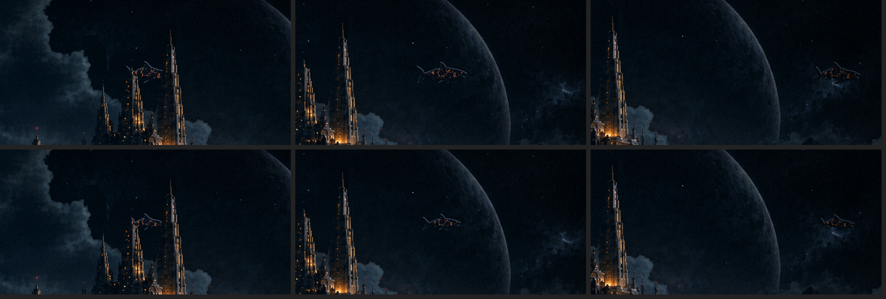
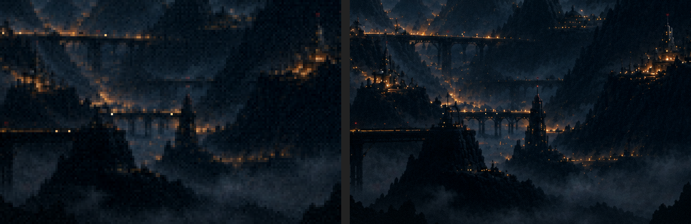
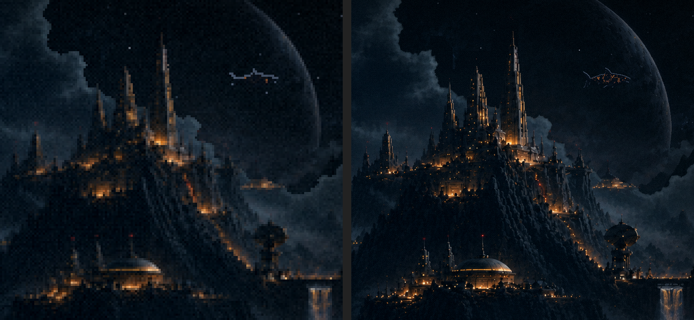

Menu refeito · rodada 3 · na resolução da pintura
19/10/2026. ← rodada 2 · As suas escolhas: a pintura na resolução dela ("mesmo que fuja do estilo do jogo, por ser o menu inicial"), o Leviatã menor e mais lento, e o tratamento das fases nas duas versões. Os vídeos têm 48 s e repetem sozinhos.
O menu na resolução da pintura o tamanho
Agora ele roda dentro da camada HD do jogo (a do texto), debaixo do menu de verdade: é assim que o menu seria construído nessa resolução.

O que mudou:
- O Leviatã no pixel da pintura. Na rodada 2 ele era o sprite do jogo ampliado ×4, em blocos grossos sobre a pintura fina. Agora ele é assado direto do desenho dele (176 px) no tamanho da tela. É redução, não ampliação. O aro de 1 px fica fino como as linhas da pintura.
- Mais lento: a travessia passou de 26 s para 45 s. O nado desacelerou junto (de 10 para 6 quadros por segundo); senão ele bateria a nadadeira depressa andando devagar.
- Duas correções na pintura, que só apareceram com ele passando:
- a versão fria (o céu de trás) tem as agulhas mais altas e um pouco deslocadas, e as pontas dela apareciam pela janela, com o Leviatã nadando NA FRENTE delas. Limpei esse céu numa faixa logo acima das suas agulhas;
- a pontinha fina da agulha do meio era meio transparente (a borda suavizada do seu recorte), e a cauda dele aparecia através dela. Agora ela é sólida; só a borda das nuvens continua macia.
O tratamento nas duas versões
A névoa, o halo das luzes, a correção de cor, a vinheta, o grão e a poeira: o mesmo perfil nas duas, no mesmo relógio, ambas em 1536×864.


Por que a rodada 2 enganava: o shader da Atmosfera mede tudo em pixels da tela: as manchas de névoa (70×26 px) e o raio do brilho das luzes. Na versão da pintura, cada pixel é 4× menor, e tudo encolhia 4×. A névoa quase sumia e as luzes ficavam sem brilho.
Agora a névoa e o halo são medidos em pixels do jogo nas duas versões. O pontilhado da névoa e o grão ficam no pixel de cada imagem: grosso no jogo, fino na pintura. A poeira anda na mesma velocidade na tela e tem grãos de 2 px.
Um ponto antes de fechar a sua pintura maior
A camada HD acompanha a tela do jogador. Numa janela de 1536 px de largura, ela tem 1536×864, o tamanho destes vídeos. Em tela cheia num monitor Full HD (1920×1080), ela passa a 1920×1080.
Depois do corte, a sua pintura tem 1582×890. Em Full HD ela teria de ser ampliada 21%, e a sua regra é reduzir sim, ampliar nunca. Para cobrir o Full HD, as duas imagens (a do recorte e a do céu de trás) precisam ter pelo menos 2145×1080 (ou 2560×1440, que cobre até monitores maiores com folga).
Consegue gerar as duas nesse tamanho, com a mesma composição? Se não der, o plano B é desenhar a camada da pintura em 1536×864 e deixar o navegador ampliar em telas maiores. Funciona, mas perde nitidez justamente na tela mais comum.
para decidir
- O tamanho do Leviatã: 96 px (minha aposta) ou 128 px.
- A velocidade: a travessia em 45 s está boa?
- A pintura maior: dá para gerar as duas imagens em 2560×1440, ou pelo menos 2145×1080?